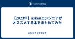

asken テックブログ
https://tech.asken.inc/
askenエンジニアが日々どんなことに取り組み、どんな「学び」を得ているか、よもやま話も織り交ぜつつ綴っていきます。 皆さまにも一緒に学びを楽しんでいただけたら幸いです！
フィード
全社員で取り組んだaskenコーポレートバリュー刷新~1年間の軌跡~ 1
1
asken テックブログ
こんにちは。「あすけん」のプロダクトマネージャーを担当しながら、社内の「組織強化委員会」にも所属している伊藤です。 組織強化委員会とは、主にミッション・ビジョン・バリューの浸透を目的として様々な活動を行っている社内委員会です。 今回は、昨年度に1年掛けて実施した「バリュー刷新プロジェクト」の流れを一通りご紹介します。この記事を通してaskenの雰囲気を知っていただきたいですし、まさに今バリューの見直しを検討されている方にとって、何らかの参考になれば嬉しいです。 目次 バリューの役割と重要性 バリュー改訂の背景 バリュー改訂の段取り ① 従業員の思いを聞くワークショップ ② 経営陣の思いを聞くワ…
5日前

【2023年】askenエンジニアがオススメする本をまとめてみた
asken テックブログ
こんにちは。食事管理アプリ『あすけん』のモバイル開発を担当しています、大澤です。 今回、2022年7月に書いた「【2022年】askenエンジニアがオススメする本をまとめてみた」の【2023年】版を書いてみました（既に2024年になりましたが）。 tech.asken.inc 前回のまとめから、エンジニアも増えましたので、改めてエンジニア16名にアンケートをとった結果をまとめています。メンバーが増えた分、オススメしたい本が増えましたが、ぜひご覧ください。 ※書いた人…大澤のインタビュー記事 www.wantedly.com ソフトウェア開発・言語 Go言語プログラミングエッセンス https:…
9日前

askenモバイル開発：3チームで共同運営するリリーストレイン
asken テックブログ
こんにちは。コンシューマ事業部モバイル開発担当の藤原です。 今回は、弊社が提供する「あすけん」のAndroidとiOSアプリについてのデリバリープロセスについてご紹介します。 この記事で伝えたいこと 「あすけん」サービスのモバイル開発は、3つのプロダクトチームで1つのアプリを開発しています。チームごとにユーザー価値の仮説検証サイクルや目的が異なっており、自分のチームの都合だけでリリースすると他のチームへ予期せぬ影響が出てしまいます。弊社において、この課題の解決手段として「リリーストレイン」を採用しており、そのプロセス概要と組織的な基盤の事例をご紹介いたします。同様の課題に直面している方々のご参…
2ヶ月前
「【EM勉強会】みんな嫌い？目標設定ってどうやってる？」を開催しました
asken テックブログ
こんにちは。コンシューマ事業部副部長兼EMの村上です。先月に引き続きの投稿になりますー。今回は12/12に開催しました、「【EM勉強会】みんな嫌い？目標設定ってどうやってる？」の動画を、最近新設しました弊社tech系YouTubeチャンネルにアップしました！目標設定が苦手という声を様々な会社で聞くことがありますので、今回の内容が皆様の目標設定の手助けになれば幸いです。当日も100人を超える方に来ていただきましたが、見逃した人、来ていただいた人問わず是非みていだければ思います。もしよろしければ、チャンネル登録、高評価よろしくお願いしますw ① asken アジャイルな目標設定のススメ 私も含めて…
2ヶ月前
コンシューマ事業部実例マッピング勉強会レポート！会話で効率的にルールを作成しよう
asken テックブログ
はじめに こんにちは。コンシューマ事業部バックエンドエンジニアの齋藤です。 今回はコンシューマ事業部で行った実例マッピング勉強会について紹介します。 実例マッピングについて 実例マッピングとは、 ユーザーストーリー ルール(=要件) ルールに関連する実例 疑問 の4種類をそれぞれ異なる色の付箋に書き出し、マッピングしながら関係者が会話を行うことで、ユーザーストーリーのルールを明確にするための会話を短く、強力に生産的にするための方法です。 詳しくは、ぜひ先日 高津が投稿した記事 をご覧ください！ 勉強会開催まで 1月にコンシューマ事業部のメンバーの多くが出社する日があったため、品質保証・テスト勉…
2ヶ月前
習慣化アプリのプロダクトマネージャーが見ている重要指標とは？〜asken / bondavi / mikan 3社の事例を紹介〜
asken テックブログ
はじめに こんにちは。askenでプロダクトマネージャーを担当している伊藤です。 主に「あすけん」のロードマップや機能企画を考えたりする仕事をしていますが、本日はプロダクト利用状況の分析に関して書かせていただきます。 これにあたり、先日開催したPdM勉強会の内容を一部抜粋し、同じく習慣化をテーマにアプリ運営をする他社様の事例も交えてご紹介いたします。 当社の事例に関しては、実際のSQLクエリやアウトプットも交えてご紹介しますので、ぜひ最後までご覧ください。 抜粋元のイベントについて イベント詳細および登壇者のプロフィール詳細はこちらをご覧ください。 戸田 大介 氏(bondavi株式会社) 飯…
2ヶ月前
進化するasken：プロダクトチームの活動と挑戦
asken テックブログ
こんにちは。コンシューマ事業部副部長兼EMの村上です。2023年5月に入社しまして入社8ヶ月目にしてaskenテックブログ初投稿になります！私の経歴などはこちらをご覧ください。現在はあすけんの価値を高めるため、 プロダクト開発組織のマネジメントを行っています。先日、VPoEの安西からプロダクト開発組織を変えた話をポストさせていただきました。私からは、プロダクトチームが具体的にどのような活動をしているかを紹介させていただきます。 プロダクトチームの目指す姿 プロダクトの成功には、ユーザー価値、事業成果(売上、利益)、この二つを両立する必要があります。特にプロダクトチームはユーザー価値を高めること…
3ヶ月前
ゼロから始める治療用アプリのUXリサーチ。その進め方とは？
asken テックブログ
こんにちは。医療事業部デザイナーの田仲です。 私たちは今、糖尿病のプログラム医療機器(SaMD)を開発しています。 承認されているSaMDがまだまだ少ない中、これから開発着手する方々はどのようにプロダクトを設計すれば良いか事例を探すのが一苦労かと思います。 今回は、医療機器のプロトタイプを作成する際に行った「UXリサーチ」の方法を紹介します。 私たちの足跡を辿ることで、これからSaMD開発に乗り出す方の足掛かりとなる情報が得られると思います。 目次 なぜUXリサーチをするのか？ ペルソナとジャーニー 価値探索は仮説と検証の繰り返し ソリューション 臨床現場のニーズと開発者たちの価値のズレ 文献…
3ヶ月前
実例マッピングはじめました
asken テックブログ
こんにちは。asken Androidエンジニア兼品質管理の高津です。 今回は医療事業部で実例マッピングをやってみた話です。 この記事は、ソフトウェアテスト Advent Calendar 2023 の12日目です。 実例マッピングとは 実例マッピングとは、 ユーザーストーリー ルール(=要件) ルールに関連する実例 疑問 の4種類をそれぞれ異なる色の付箋に書き出し、マッピングすることで、ユーザーストーリーのルールを明確にするための会話を短く、強力に生産的にするためのシンプルでローテクな方法です。 Matt Wynne氏が発明した方法で、Matt Wynne氏の許可を得てブロッコリーさんが翻訳…
4ヶ月前
Objective-CからSwiftへ書き換えをスムーズに行なった話
asken テックブログ
はじめに こんにちは。モバイルエンジニアの大澤です。 普段はあすけんのAndroid/iOSアプリを開発しています。 あすけんのサービス運営は2023年で15周年を迎え、iOSアプリの運用も10年目を迎えました。開発当初のiOSのメイン言語はObjective-Cだったため、今でもObjective-Cのコードが一部残っており、それによって様々な問題が発生していました。 2007年にiPhoneが発表されてから15年以上が経ち、同じようにObjective-CからSwiftへの移行を進めたいと思っている会社も少なくないと思います。 本記事ではSwiftへのスムーズな移行を実現するための実践的な…
4ヶ月前
NEW！askenエンジニア組織のご紹介
asken テックブログ
こんにちは！ askenで人事採用をしています、平賀（ひらが）です。 2020年にasken初の人事採用担当者として入社、エンジニアをはじめ様々な職種の採用や人事、採用広報を行っています。 はじめに 2021年にこのaskenテックブログを立ち上げてから間もなく、私から当時のaskenエンジニア組織のご紹介記事を書かせていただきました。 tech.asken.inc が、あれから早いものでもう2年… 新しくaskenへジョインしてくれたエンジニアも増え、組織構成や開発のプロダクトもどんどん進化していますので、新しくなったエンジニア組織について、スライドにまとめました。 その名も「asken e…
4ヶ月前
第2回Bug Bashを開催しました。
asken テックブログ
こんにちは、asken Androidエンジニアの高津です。医療事業部で品質管理も担当するようになりました。 最近はモバイルエンジニアの大澤と協力して、asken社内で品質改善に関する取り組みを色々と行なっています。 大澤が第1回Bug Bash開催に関する記事を書きました。 今回は第2回 Bug Bashを開催した話をします。 なぜ第2回Bug Bashを実施したのか エンジニアに閉じず、事業部全体で品質改善に取り組む意識を高めたいからです。 第1回Bug Bashは参加者からも好評でした。 第1回実施後に、「団体戦にする」「メンバーをエンジニア以外に広げる」等のTRYをまとめました。第2回…
5ヶ月前
asken のインフラチームの Mission & Vision を策定しました
asken テックブログ
こんにちは。asken でインフラエンジニアをしている沼沢です。 昨年 asken 初のインフラエンジニアとして僕が入社してからずっとインフラエンジニアは僕1人だったのですが、23年9月より新たなメンバーがジョインしてチームになることをきっかけに、チームで共通認識を持ち同じ方向を向いて仕事ができるようにするため、asken におけるインフラチームの Mission と Vision を策定しました。 本稿では、この Mission & Vision についてお話します。 Mission 一般的にインフラエンジニアの部門はコストセンターとされており、事実、直接的に売上に貢献しにくい存在です。 ま…
5ヶ月前
「asken withミライトデザインのDDDのはじめ方 DDD x RDRA x ICONIX」勉強会を開催しました
asken テックブログ
こんにちは！askenでバックエンドのエンジニアをやっている澤路です。 以前のブログにも書いた通り、今askenはPHPで作られた既存システムをKotlinを使ってリアーキテクチャしています。 4月から9月までは実際に作り始めるまでの準備として技術検証をしてきました。この技術検証では、既存システムの分析から実装までのプロセスでaskenとして新しい方法を試してきました。 そこで、一緒に技術検証をやってくれているミライトデザインから林宏勝さん、鈴木ほげさんに参加していただいて、 これまでの活動での取り組みや学びを、それぞれの目線で発表する勉強会を行いました。 asken.connpass.com…
5ヶ月前
人数が増えたので、プロダクト開発組織を変えた話
asken テックブログ
こんにちは。VPoEの 安西 です。 先週、取締役の天辰からあすけん全体、取締役兼CPOの道江がプロダクトマネジメントチームのお話をポストさせていただきました。続きまして私からは、プロダクト開発組織の視点でお話してみようと思います。 タイトルにも書きました通り、4月よりプロダクト開発組織を大きく変えさせていただきました。まずその背景から整理していきます。 50人の壁を超え、組織化が必要になった 50人の壁という言葉がありますが、まさにあすけんの社員数がその人数を突破しました。 数年前までは少人数で開発していたので、役割を超えた会話も容易で、意識的に組織化や情報共有をしなくても、作業の目的や施策…
6ヶ月前
あすけんのプロダクトマネジメントチームを作った話
asken テックブログ
こんにちは！askenの道江です。 askenのプロダクトマネジメントは、つい最近まで私を含め1~2名が中心になって行っていましたが、ここ数年は急激に事業が成長し、それに応じて組織も拡大しました。より多くのユーザー価値を創造し続けるため、この4月から複数人のプロダクトマネージャーを中心としたプロダクトマネジメントチーム体制に移行し、私がCPO(Chief Product Officer)を務めることになりました。 今回は、プロダクトマネジメントチームを立ち上げるに至った経緯や、チーム体制に移行して気づいたことなどについてお話したいと思います。 なぜプロダクトマネジメントチームを作ろうと思ったか…
6ヶ月前
【あすけんのミッション】 食・栄養学 × テクノロジー = 健康
asken テックブログ
はじめに みなさん、こんにちは。askenの天辰(あまたつ)といいます。askenテックブログに初めて記事を投稿することになりました。ほとんどの方、はじめまして。 私は2007年に、後に「あすけん」になるヘルスケアIT事業の企画を作り事業と会社を立ち上げました。以来、15年以上にわたり「あすけん」に関する様々な仕事をしてきましたが、直近では主に全社戦略の立案や経営に関すること、医療事業などを担当しています。 今回は経営担当がテックブログに投稿する初めての記事ということで、あすけんのミッションとテクノロジーについて思いを書いていこうと思います。 あすけんのミッション あすけんのミッションは「ひと…
6ヶ月前
Bug Bash（バグ バッシュ）を社内のイベントで開催しました。
asken テックブログ
はじめに こんにちは。モバイルエンジニアの大澤です。 今回は、私とAndroidエンジニア兼品質保証を担当している高津で企画して開催した「Bug Bash（バグ バッシュ）」についての話です。 Bug Bash（バグ バッシュ）とは チームメンバー全員で、指定期間内にバグを見つけ出すイベントです。テストケースは用意せず、各自が思いつく限りの方法で操作してバグを検出します。 目的 品質向上 多数のバグを発見できるので、その後のプロセスとして優先度の高いバグから修正できます。 コラボレーション チームメンバー全員で参加するため、チーム内のコラボレーションを促進します。 チーム全体で問題解決に取り組…
6ヶ月前
技術選定の下ごしらえ
asken テックブログ
今年、スマホアプリのクロスプラットフォーム技術の選定を行う機会がありました。わくわく感が大きかったのですが、初めての割と大きな技術選定ということもあり、「はて。どう進めるか？どうすると良さそうか？」というのが正直なところでした。また、自身がバックエンドエンジニアという背景から、スマホアプリにそこまで詳しくはないということも手伝い、「何を検証するか」という部分も自信があまりないスタートでした。そんなゆるふわな状況とはいえ、やると決めたからには技術選定を進めていく必要があります。今回の記事では、料理における下ごしらえのように、技術選定をする前の「準備段階」にフォーカスして、私が実際にどんな行動をしたのかを共有できればと思います。
6ヶ月前
Flutter で Apple Health / Android Health Connect 連携
asken テックブログ
Flutter で Apple Health / Android Health Connect 連携 こんにちは、asken Androidエンジニアの高津です。 先日の「僕たちはどう Flutter で価値を届けるのか？」の記事の通り、asken では新規事業のアプリ開発に「Flutter」を採用することに決定しました。 下図は技術検証の観点を整理したものです。 技術検証の観点の一つとして「プロダクトでやりたいことにFlutterが対応できるのか」がありました。 検証項目 Google I/O Extendedで弊社伊藤がHealth Connectの紹介セッションに登壇させていただきました…
7ヶ月前
PHPからKotlinへ、ドメイン駆動設計を用いたリアーキテクチャへの挑戦
asken テックブログ
はじめに 今「あすけん」は大きなチャレンジをしています。 中長期的なサービスの成長を見据えて、アーキテクチャの見直しとシステムの再設計を行っています。 この再設計の一環として、PHPで構築された既存システムをKotlinを用いた新システムに置き換えるという大きな決断をしました。 さらに、より保守性の高いシステムを目指して、新しい手法も試しています。 具体的には「RDRA」「ICONIX」「ドメイン駆動設計」の考え方を取り入れて再設計を行っています。 今はまだ技術検証の段階ですが、一部の機能の分析・モデリングを行ってコードに落とし込んでいます。 課題も毎日のように見つかっています。しかし、日々解…
8ヶ月前
「アジャイルテスト(Agile Testing)」の勉強会を社内で開催しました
asken テックブログ
はじめに こんにちは。モバイルエンジニアの大澤です。 今回は、私とAndroidエンジニア兼品質保証を担当している高津で企画して開催した「アジャイルテスト勉強会」についての話です。 開催した動機 最近、asken社内でテストや品質に対する関心が高まっていました。 そこで以前から、興味を持ち、勉強をしていた私と高津で1つの事例として、「アジャイルテスト」について共有する会をやりたいと思い企画しました。 参加者 弊社エンジニア12名 1回目ということもあり、参加者をエンジニアに絞りました。 進め方 発表は一方通行にならないように、miroというオンラインホワイトボード、画面遷移図ツールを使いました…
8ヶ月前
僕たちはどう Flutter で価値を届けるのか？
asken テックブログ
プロローグ 僕たちはなぜ技術選定をしたのか篇 僕たちはなぜ Flutter を選んだのか篇 僕たちはどう技術検証をしたのか篇 僕たちはどう Flutter で価値を届けるのか篇 エピローグ プロローグ ある程度エンジニアをやっていると、大なり小なり何かしらな技術の選定を行う機会があると思います。 かくいう僕らも今回、スマホアプリのクロスプラットフォーム技術の選定を行いました。 技術選定自体に興味がある方、あすけんの技術に興味がある方に、今回の記事が届けば良いなと思います。 もちろん(？)某映画が面白かった方にも届けば！(笑) 現在「あすけん」では、中長期的な将来を見据えて、全社的に現状の技術ス…
8ヶ月前
Twilio も PagerDuty も使わない、アラート電話の仕組みを構築した話
asken テックブログ
こんにちは。asken でインフラエンジニアをしている沼沢です。 今回は、緊急性の高いアラートを検知した際の電話連絡の仕組みについてお話します。 抱えていた課題 弊社では、元々システム監視はしていたものの、検知時はメールや Slack の通知に留まっており、システムが深刻な状態となった場合に架電する仕組みがありませんでした。 休日や夜間に深刻な状態となった場合にメールや Slack 通知だけでは気付きづらく、早急に対処しなければならない状況の検知が遅れる懸念がありました。 検討したソリューション Twilio まず、自身が利用したことのある Twilio を使った架電を検討しました。 しかし思…
9ヶ月前
(iOS/Android)モバイルアプリの動作確認を効率化するためのテクニック
asken テックブログ
はじめに こんにちは。システム部の大澤です。 普段は北米版あすけんのAndroid/iOSアプリを開発しています。 最近は、北米版あすけんのAndroidアプリをメインで開発しています。 今回はアプリの動作確認を効率的に行うテクニックについてです。 アプリをリリースした後に不具合なく動くように確認作業をします。 確認作業の中でとくに不具合発生率が高かったのはFirebaseの行動ログでした。 Firebaseの行動ログの不具合を減らすために、改善とその仕組みを応用したことについてまとめました。 Firebaseの行動ログ speakerdeck.com 今回は、クックパッドの@yujif_さん…
10ヶ月前
asken 「海外で働く、起業する。 iOS×Android エンジニアのキャリアの広げ方 vol.1 」勉強会を開催しました
asken テックブログ
国内事業部で Android エンジニアをしている八森です。 asken のエンジニア組織では、co-learning (共に学ぶ) を行動指針の一つとしており、お互いに刺激し合いながら、新しい知識やスキルを習得し、成長していくことを目指しています。私たちの組織は、ただ単に知識やスキルを伝え合うだけではなく、お互いの考え方や経験を共有することで、より深い学びを得ることを大切にしています。 asken では海外就労や起業など、さまざまなキャリアを経験してきたエンジニアが働いています。私たちの経歴が皆様のキャリア構築の参考になればと思い、3月9日にオンライン勉強会「海外で働く、起業する。 iOS×…
1年前
targetSDKVersion 33(Android OS 13)に対応した話
asken テックブログ
はじめに こんにちは。システム部の大澤です。 普段は北米版あすけんのAndroid/iOSアプリを開発しています。 最近は、北米版あすけんのAndroidアプリをメインで開発しています。 弊社アプリでAndroid OS 13を使用しているユーザーが増えてきたので対応する必要が出てきました。 Androidアプリで依存しているライブラリもtargetSDKVersion 33を指定しないとアップデートできない状態になっていました。 前述の理由により北米版あすけんのAndroidでtargetSDKVersionを33(Android OS 13)に更新しました。 更新時にやったことについて以下…
1年前
iOSアプリ開発をショートカット機能を活用して効率化する
asken テックブログ
はじめに こんにちは！iOSエンジニアの三浦です。 弊社 あすけん アプリでは、食事登録機能に加えて、身体データや睡眠、運動の登録機能も提供しています。 登録に際しては、手動登録だけでなくヘルスケアに入力されたデータの読み込み等の外部連携にも対応しています。 ヘルスケアとの連携を含めた動作確認はヘルスケア側でのデータ登録に時間と手間がかかるため、以前から効率化したいと思っていた部分でした。 そんな中、最近出版された「iOSショートカットプログラミング入門」を読んだことがきっかけで、ショートカット機能の便利さと業務への活用方法に気づいたので紹介したいと思います。 ショートカット機能について 基本…
1年前
asken「新年読書LT大会」を開催しました！
asken テックブログ
はじめに こんにちは。サーバサイドエンジニアの羽鳥です。 今回は、私が企画して開催した「新年読書LT大会」についての話です。 どのようなLT大会だったのか？ 冬季の長期休暇を利用して、読んだ本から得た学びを共有し合うという「読書LT大会」を企画しました。 読む本については以下のゆるい縛りの上で、参加メンバーが読みたいものを自由に選んでもらいました。 本の縛り OK : プロダクト開発, マネジメント, コーチング, アジャイル・スクラム e.g. プロダクトマネジメントのすべて、アジャイルな見積りと計画づくり NG : いわゆる「技術系」の本 e.g. リーダブルコード、エリック・エヴァンスの…
1年前
社内で開催しているAndroid勉強会について
asken テックブログ
はじめに こんにちは。システム部の大澤です。 普段は北米版あすけんのAndroid/iOSアプリを開発しています。 今回はasken社内で開催しているAndroid勉強会についての話です。 目的 勉強会には３つの目的があります。 1つ目は社内でのノウハウ共有です。各プロダクトで溜まったノウハウを共有する場所として活用し、社内のAndroidエンジニアの底上げをしていくことです。 2つ目は最新技術へのキャッチアップです。最新技術を学び取り入れることでプロダクトのコードをより良くしていくことができます。キャッチアップするきっかけとして、勉強会を使い、参加者で共に学ぶ場（co-learning）にし…
1年前